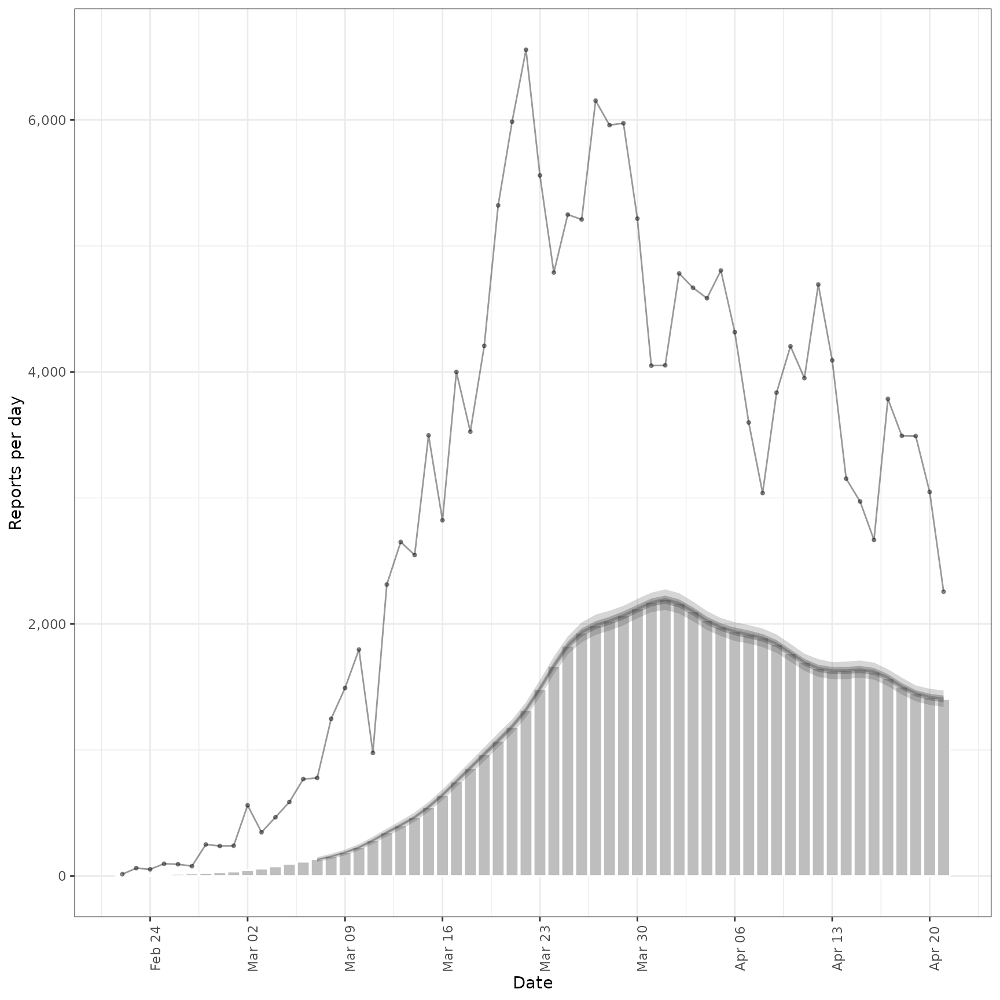
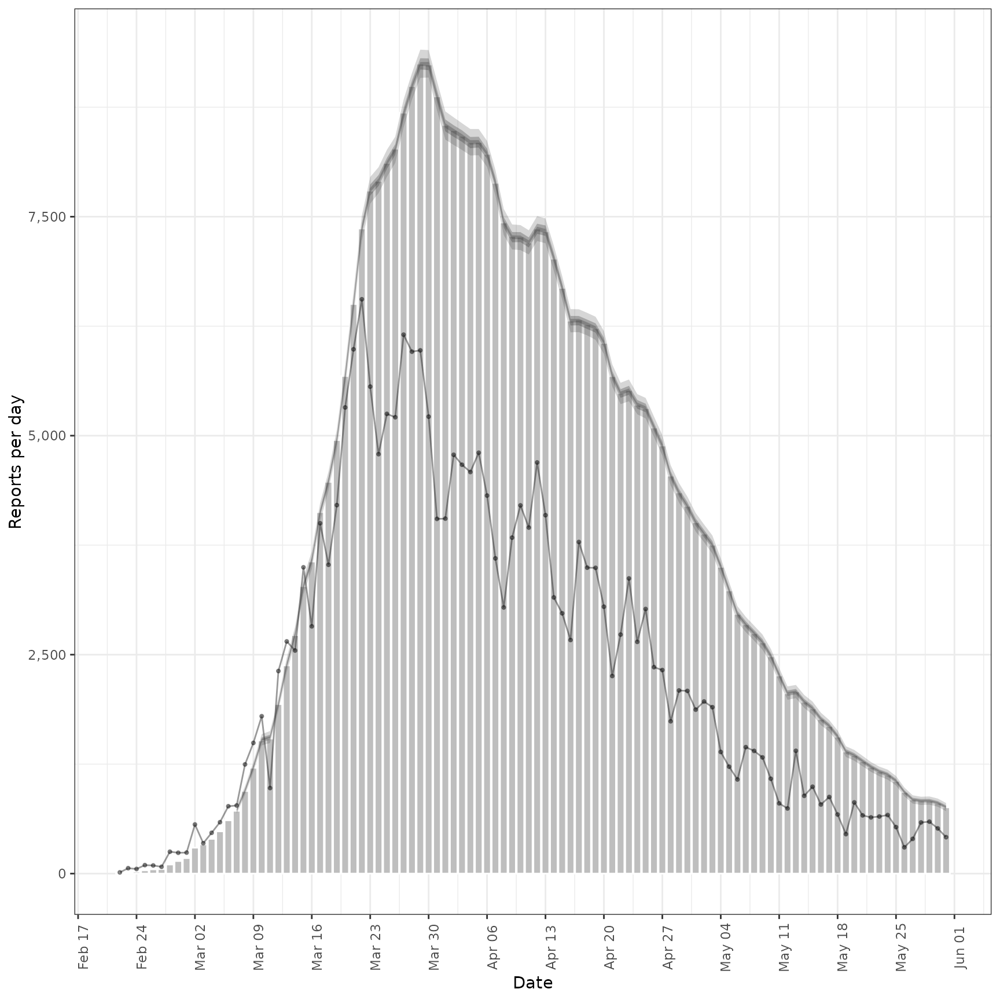
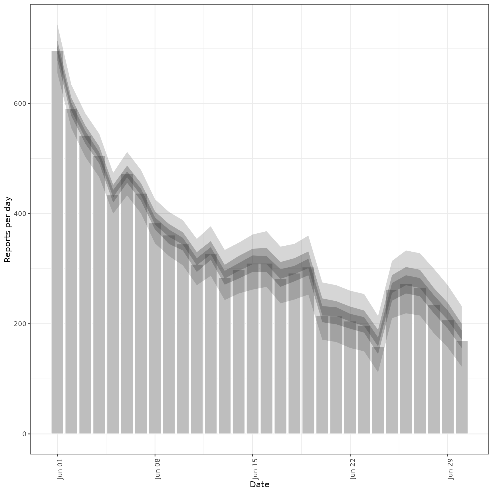

Estimate a Secondary Observation from a Primary Observation
Source:R/estimate_secondary.R
estimate_secondary.Rd![[Stable]](figures/lifecycle-stable.svg) Estimates the relationship between a primary and secondary observation, for
example hospital admissions and deaths or hospital admissions and bed
occupancy. See
Estimates the relationship between a primary and secondary observation, for
example hospital admissions and deaths or hospital admissions and bed
occupancy. See secondary_opts() for model structure options. See parameter
documentation for model defaults and options. See the examples for case
studies using synthetic data and
here
for an example of forecasting Covid-19 deaths from Covid-19 cases. See
here for
a prototype function that may be used to estimate and forecast a secondary
observation from a primary across multiple regions and
here # nolint
for an application forecasting Covid-19 deaths in Germany and Poland.
Usage
estimate_secondary(
data,
secondary = secondary_opts(),
delays = delay_opts(LogNormal(meanlog = Normal(2.5, 0.5), sdlog = Normal(0.47, 0.25),
max = 30), weight_prior = FALSE),
truncation = trunc_opts(),
obs = obs_opts(),
stan = stan_opts(),
burn_in = 14,
CrIs = c(0.2, 0.5, 0.9),
priors = NULL,
model = NULL,
weigh_delay_priors = FALSE,
verbose = interactive()
)Arguments
- data
A
<data.frame>containing thedateof report and bothprimaryandsecondaryreports. Optionally this can also have a logicalaccumulatecolumn which indicates whether data should be added to the next data point. This is useful when modelling e.g. weekly incidence data. See also thefill_missing()function which helps add theaccumulatecolumn with the desired properties when dealing with non-daily data. If any accumulation is done this happens after truncation as specified by thetruncationargument.- secondary
A call to
secondary_opts()or a list containing the following binary variables: cumulative, historic, primary_hist_additive, current, primary_current_additive. These parameters control the structure of the secondary model, seesecondary_opts()for details.- delays
A call to
delay_opts()defining delay distributions between primary and secondary observations See the documentation ofdelay_opts()for details. By default a diffuse prior is assumed with a mean of 14 days and standard deviation of 7 days (with a standard deviation of 0.5 and 0.25 respectively on the log scale).- truncation
A call to
trunc_opts()defining the truncation of the observed data. Defaults totrunc_opts(), i.e. no truncation. See theestimate_truncation()help file for an approach to estimating this from data where thedistlist element returned byestimate_truncation()is used as thetruncationargument here, thereby propagating the uncertainty in the estimate.- obs
A list of options as generated by
obs_opts()defining the observation model. Defaults toobs_opts().- stan
A list of stan options as generated by
stan_opts(). Defaults tostan_opts(). Can be used to overridedata,init, andverbosesettings if desired.- burn_in
Integer, defaults to 14 days. The number of data points to use for estimation but not to fit to at the beginning of the time series. This must be less than the number of observations.
- CrIs
Numeric vector of credible intervals to calculate.
- priors
A
<data.frame>of named priors to be used in model fitting rather than the defaults supplied from other arguments. This is typically useful if wanting to inform an estimate from the posterior of another model fit.- model
A compiled stan model to override the default model. May be useful for package developers or those developing extensions.
- weigh_delay_priors
Logical. If TRUE, all delay distribution priors will be weighted by the number of observation data points, in doing so approximately placing an independent prior at each time step and usually preventing the posteriors from shifting. If FALSE (default), no weight will be applied, i.e. delay distributions will be treated as a single parameters.
- verbose
Logical, should model fitting progress be returned. Defaults to
interactive().
Value
An <estimate_secondary> object containing:
fit: The stan fit object.args: A list of arguments used for fitting (stan data).observations: The input data (<data.frame>).
Examples
# \donttest{
# set number of cores to use
old_opts <- options()
options(mc.cores = ifelse(interactive(), 4, 1))
# load data.table for manipulation
library(data.table)
#### Incidence data example ####
# make some example secondary incidence data
cases <- example_confirmed
cases <- as.data.table(cases)[, primary := confirm]
# Assume that only 40 percent of cases are reported
cases[, scaling := 0.4]
#> date confirm primary scaling
#> <Date> <num> <num> <num>
#> 1: 2020-02-22 14 14 0.4
#> 2: 2020-02-23 62 62 0.4
#> 3: 2020-02-24 53 53 0.4
#> 4: 2020-02-25 97 97 0.4
#> 5: 2020-02-26 93 93 0.4
#> ---
#> 126: 2020-06-26 296 296 0.4
#> 127: 2020-06-27 255 255 0.4
#> 128: 2020-06-28 175 175 0.4
#> 129: 2020-06-29 174 174 0.4
#> 130: 2020-06-30 126 126 0.4
# Parameters of the assumed log normal delay distribution
cases[, meanlog := 1.8][, sdlog := 0.5]
#> date confirm primary scaling meanlog sdlog
#> <Date> <num> <num> <num> <num> <num>
#> 1: 2020-02-22 14 14 0.4 1.8 0.5
#> 2: 2020-02-23 62 62 0.4 1.8 0.5
#> 3: 2020-02-24 53 53 0.4 1.8 0.5
#> 4: 2020-02-25 97 97 0.4 1.8 0.5
#> 5: 2020-02-26 93 93 0.4 1.8 0.5
#> ---
#> 126: 2020-06-26 296 296 0.4 1.8 0.5
#> 127: 2020-06-27 255 255 0.4 1.8 0.5
#> 128: 2020-06-28 175 175 0.4 1.8 0.5
#> 129: 2020-06-29 174 174 0.4 1.8 0.5
#> 130: 2020-06-30 126 126 0.4 1.8 0.5
# Simulate secondary cases
cases <- convolve_and_scale(cases, type = "incidence")
#
# fit model to example data specifying a weak prior for fraction reported
# with a secondary case
inc <- estimate_secondary(cases[1:60],
obs = obs_opts(scale = Normal(mean = 0.2, sd = 0.2), week_effect = FALSE)
)
plot(inc, primary = TRUE)
#> Warning: Removed 14 rows containing missing values or values outside the scale range
#> (`geom_ribbon()`).
#> Warning: Removed 14 rows containing missing values or values outside the scale range
#> (`geom_ribbon()`).
#> Warning: Removed 14 rows containing missing values or values outside the scale range
#> (`geom_ribbon()`).

# forecast future secondary cases from primary
inc_preds <- forecast_secondary(
inc, cases[seq(61, .N)][, value := primary]
)
plot(inc_preds, new_obs = cases, from = "2020-05-01")
#### Prevalence data example ####
# make some example prevalence data
cases <- example_confirmed
cases <- as.data.table(cases)[, primary := confirm]
# Assume that only 30 percent of cases are reported
cases[, scaling := 0.3]
#> date confirm primary scaling
#> <Date> <num> <num> <num>
#> 1: 2020-02-22 14 14 0.3
#> 2: 2020-02-23 62 62 0.3
#> 3: 2020-02-24 53 53 0.3
#> 4: 2020-02-25 97 97 0.3
#> 5: 2020-02-26 93 93 0.3
#> ---
#> 126: 2020-06-26 296 296 0.3
#> 127: 2020-06-27 255 255 0.3
#> 128: 2020-06-28 175 175 0.3
#> 129: 2020-06-29 174 174 0.3
#> 130: 2020-06-30 126 126 0.3
# Parameters of the assumed log normal delay distribution
cases[, meanlog := 1.6][, sdlog := 0.8]
#> date confirm primary scaling meanlog sdlog
#> <Date> <num> <num> <num> <num> <num>
#> 1: 2020-02-22 14 14 0.3 1.6 0.8
#> 2: 2020-02-23 62 62 0.3 1.6 0.8
#> 3: 2020-02-24 53 53 0.3 1.6 0.8
#> 4: 2020-02-25 97 97 0.3 1.6 0.8
#> 5: 2020-02-26 93 93 0.3 1.6 0.8
#> ---
#> 126: 2020-06-26 296 296 0.3 1.6 0.8
#> 127: 2020-06-27 255 255 0.3 1.6 0.8
#> 128: 2020-06-28 175 175 0.3 1.6 0.8
#> 129: 2020-06-29 174 174 0.3 1.6 0.8
#> 130: 2020-06-30 126 126 0.3 1.6 0.8
# Simulate secondary cases
cases <- convolve_and_scale(cases, type = "prevalence")
# fit model to example prevalence data
prev <- estimate_secondary(cases[1:100],
secondary = secondary_opts(type = "prevalence"),
obs = obs_opts(
week_effect = FALSE,
scale = Normal(mean = 0.4, sd = 0.1)
)
)
plot(prev, primary = TRUE)
#> Warning: Removed 14 rows containing missing values or values outside the scale range
#> (`geom_ribbon()`).
#> Warning: Removed 14 rows containing missing values or values outside the scale range
#> (`geom_ribbon()`).
#> Warning: Removed 14 rows containing missing values or values outside the scale range
#> (`geom_ribbon()`).

# forecast future secondary cases from primary
prev_preds <- forecast_secondary(
prev, cases[seq(101, .N)][, value := primary]
)
plot(prev_preds, new_obs = cases, from = "2020-06-01")

options(old_opts)
# }